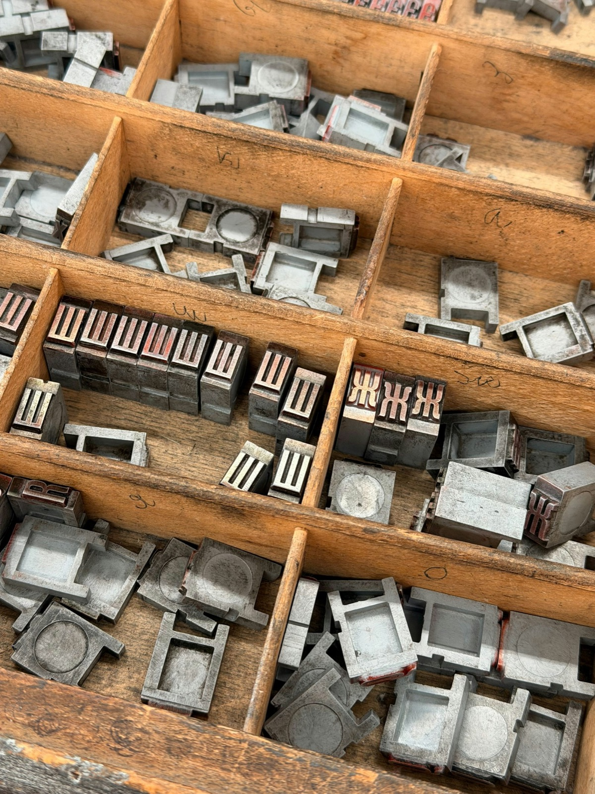
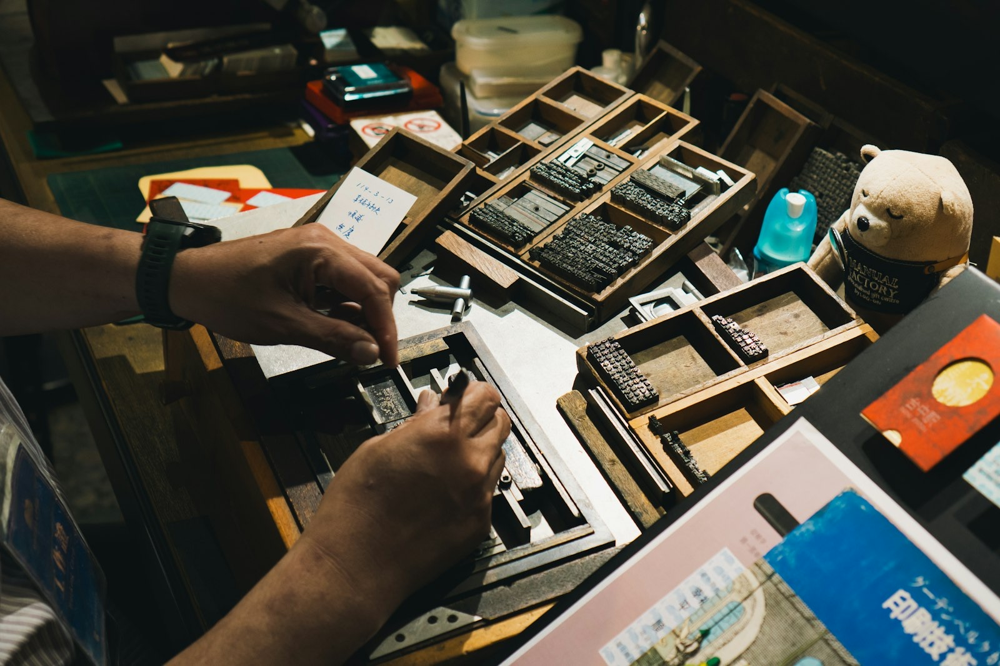
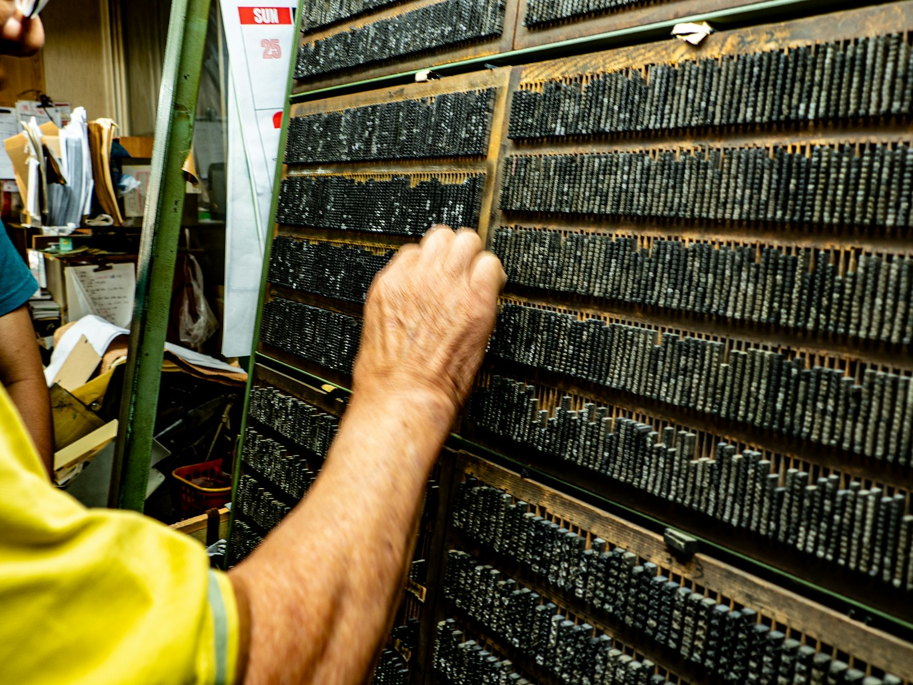

Durante décadas, a los trabajadores de las viejas imprentas se les daba un litro de leche al día. Era parte del convenio: se creía que la leche los protegía del plomo que fundían a diario. No los protegía de nada. El plomo seguía en el aire.
Esa es la historia poco contada de la imprenta artesanal: un oficio que cambió el mundo, que llegó a matar a quienes lo ejercían, que se dio por muerto a finales del siglo XX… y que hoy se vende como un acabado de lujo. En este artículo te contamos cómo pasó todo eso —del primer libro impreso en España en 1472 a las tarjetas en papel de algodón de hoy— y por qué es uno de los oficios más circulares que existen.
No es nostalgia. Es un oficio vivo, con talleres que siguen imprimiendo cada día de punta a punta del país. Y al final tienes una guía descargable para encargar letterpress sin equivocarte. Empecemos por el principio, porque el tamaño de lo que casi perdimos solo se entiende mirando hacia atrás.
Un oficio de cinco siglos y medio
La imprenta de tipos móviles —la que inventó Gutenberg hacia 1440— llegó a España muy pronto. El primer libro impreso en España fue el Sinodal de Aguilafuente, en Segovia, en 1472, salido del taller del maestro alemán Juan Párix. Es también el primer libro impreso en español. Su único ejemplar conocido se conserva en la catedral de Segovia: una pieza que cabe en las manos y que, sin embargo, marca el arranque de toda nuestra cultura impresa.
Desde entonces y durante más de cinco siglos, casi todo lo que leyó la humanidad pasó por una prensa de tipos: libros, periódicos, carteles, facturas, esquelas. Cada letra era una pieza física de metal que alguien colocaba a mano, una a una, en orden inverso —de derecha a izquierda y del revés, porque al imprimir todo se refleja—. El oficio tenía nombre para cada gesto: el cajista componía línea a línea, el regente dirigía el taller y el maquinista hacía rodar la prensa. Aprenderlo llevaba años, y dominarlo, toda una vida.
Y luego, en apenas un par de generaciones, casi desapareció. Para entender por qué volvió, primero hay que entender por qué se fue. Y por qué, durante mucho tiempo, irse no fue del todo una mala noticia.
La cara oscura: plomo, gas y un litro de leche
Aquí está la parte que casi nadie cuenta. El tipo de imprenta no es inocente: es una aleación de plomo, estaño y antimonio. Mientras los tipos se manipulaban en frío —se cogían, se componían, se guardaban en la caja—, el riesgo era manejable con higiene básica: no comer en el taller, lavarse las manos, no llevarse los dedos a la boca. El problema llegó con la industrialización del oficio.
En 1884, Ottmar Mergenthaler patentó la linotipia: una máquina que fundía el plomo en caliente, línea a línea (de ahí el nombre, line o' type), al lado mismo del operario. Aquello multiplicó la velocidad de la prensa diaria —un periódico entero podía componerse en horas, no en días— y por eso conquistó todas las redacciones del mundo. Pero también llenó los talleres de un vapor de plomo que los linotipistas respiraban turno tras turno.

La intoxicación crónica por plomo tiene nombre: saturnismo. Afecta al sistema nervioso, a la sangre y a los riñones, y fue una de las enfermedades laborales más extendidas de toda la era industrial. Los linotipistas estaban entre los más expuestos, junto a fundidores y pintores. ¿La «protección» de la época? Aquel famoso litro de leche diario, recogido incluso en convenio. Un parche que tranquilizaba conciencias pero no limpiaba el aire que se respiraba.
«En la imprenta no sobrevivían ni los gatos.»El hijo de un impresor, en los comentarios de uno de nuestros posts. Su padre murió por el plomo.
No es un caso aislado ni una leyenda de taller. Durante décadas, el precio de imprimir lo pagó la salud de quienes lo hacían. Conviene recordarlo, porque la historia bonita del renacer premium que viene después solo es honesta si no borramos esta parte. La imprenta artesanal no volvió «tal cual era»: volvió habiendo dejado atrás lo que la hacía peligrosa.
El casi final: el offset y lo digital
Si la linotipia fue el apogeo industrial, el offset fue el principio del fin para los tipos. La impresión offset —rápida, barata, perfecta para grandes tiradas y para el color— se comió el mercado a mediados del siglo XX. Ya no hacía falta componer letra a letra: bastaba con una plancha. Después llegó lo digital, y la barrera cayó del todo: ni plancha ni taller, solo un archivo y una impresora.
A finales del siglo XX, casi todos los talleres tipográficos de España habían cerrado. Las linotipias se vendieron como chatarra al peso. Las cajas de tipos, centenarias, acabaron en desguaces, en almonedas o en almacenes olvidados; muchas se fundieron para reaprovechar el metal. El oficio parecía, definitivamente, cosa de museo: algo que se enseñaba en una vitrina, no algo que se hiciera.
Y aquí podría terminar la historia, como termina la de tantos oficios que la eficiencia industrial deja atrás. Pero no terminó. Lo que vino después es lo más interesante —y lo más contraintuitivo— de todo el relato.
Cómo se salvó: la tecnología que lo rescató
Lo fácil sería contar que al oficio lo salvó la nostalgia, un puñado de románticos empeñados en mantener vivo lo antiguo. No es verdad. Al oficio lo salvó la tecnología. La misma fuerza que casi lo mata.
En los años 80 apareció el fotopolímero: una plancha en relieve que se obtiene directamente desde un diseño hecho en el ordenador, exponiéndolo a luz ultravioleta sobre una lámina de polímero y lavando después lo que no se ha endurecido. Lo que queda es un relieve que imprime exactamente igual que los tipos —la misma huella, el mismo bajorrelieve sobre el papel— pero sin fundir ni manipular plomo. De golpe, lo que antes exigía un taller de metal caliente y semanas de composición se podía preparar en unas horas, sin veneno.
Casi seis siglos en una línea: el momento más peligroso (la linotipia) y el que lo salvó (el fotopolímero).
Tres cosas cambiaron el oficio para siempre:
- Se apagó el metal caliente. Hoy casi no quedan linotipias en marcha. La principal fuente de saturnismo —fundir plomo a diario, al lado del operario— sencillamente desapareció.
- Llegó el fotopolímero. El diseño digital se convirtió en plancha de relieve sin pasar por el plomo. Cualquier ilustración, logotipo o texto podía imprimirse en tipográfica sin tener el tipo físico.
- El peligro era el calor, no la letra. Los tipos de plomo que se conservan se manejan hoy con total seguridad: lo que envenenaba era fundirlos, no componerlos en frío. Con higiene básica, una caja de tipos centenaria es una herramienta, no una amenaza.
El oficio se quedó con lo bueno —el relieve, la huella, el gesto artesano, las máquinas— y soltó lo que mataba. Pocos oficios pueden decir lo mismo: la mayoría, cuando pierden su parte tóxica, pierden también su identidad. La imprenta artesanal encontró la forma de seguir siendo ella misma sin el veneno.
El renacer: de «muerto» a acabado de lujo
Con el plomo fuera de la ecuación, pasó algo que nadie esperaba: la gente volvió a quererlo. Diseñadores, ilustradores y marcas empezaron a buscar justo lo que una pantalla no da: la huella del tipo sobre el papel, el relieve que se toca, la pieza que no se copia con un clic. Lo que durante siglos fue la forma normal —y barata— de imprimir, se convirtió en un acabado premium.

Hoy la imprenta artesanal vive sobre todo de tres frentes. De las invitaciones de boda y la papelería de evento, donde el relieve y el tacto comunican cuidado y singularidad mucho antes de que se lea una sola palabra. De las tarjetas de visita y la identidad de marca, donde una tarjeta con bajorrelieve sobre papel de algodón deja una impresión —literal— que una digital no consigue. Y de la edición y la obra gráfica, donde el letterpress se cruza con el grabado, la ilustración y los libros de artista. Es el mismo movimiento que vive cualquier oficio que aprende a posicionar su artesanía como producto de lujo: dejar de competir por precio y empezar a competir por valor.
Hasta los materiales lo confirman. El papel de algodón para letterpress va de los 300 a los 600 g/m² —hasta el doble que el de una tarjeta normal—, precisamente para tener cuerpo suficiente donde hundir la letra sin que traspase. Lo que antes era un defecto a evitar (que el tipo marcara el papel) hoy es exactamente el efecto que se busca y se paga. El oficio no cambió de técnica; cambió de significado.
Por qué la imprenta artesanal es uno de los oficios más circulares
Y aquí es donde, desde Oficios Circulares, la historia nos toca de cerca. Porque la imprenta artesanal no solo sobrevivió: lo hizo convertida en uno de los oficios más circulares que existen, y además sin proponérselo. No adoptó la circularidad como discurso: la lleva en su forma de trabajar desde mucho antes de que la palabra existiera.
| Práctica del oficio | Por qué es circular |
|---|---|
| Máquinas centenarias que se reparan en vez de tirarse | Una Heidelberg o una minerva de hace 80 años sigue funcionando con mantenimiento. No hay obsolescencia programada: la pieza que se rompe se sustituye, no la máquina entera. |
| Tipos de plomo reutilizados durante generaciones | Una caja de tipos pasa de taller en taller, de mano en mano. El «material» no se gasta: se compone, se imprime, se desmonta y se vuelve a componer. El mismo metal sirve para mil trabajos distintos. |
| Tiradas cortas, bajo pedido | Se imprime lo que se necesita, cuando se necesita. Cero sobreproducción, cero stock muerto, cero almacén lleno de lo que no se vendió. |
Donde el modelo industrial veía un oficio lento e ineficiente, la economía circular ve exactamente lo contrario: durabilidad, reparación, reutilización y producción ajustada a la demanda. Los cuatro principios que hoy intentamos meter con calzador en tantas industrias, la imprenta artesanal los llevaba practicando siglos. No es que se haya «vuelto» circular para encajar con los tiempos: es que los tiempos, por fin, se han vuelto hacia ella.
Talleres vivos: el mapa de la imprenta artesanal en España
Cuando publicamos sobre este tema en nuestras redes, pasó lo mejor que puede pasar: el oficio respondió. En los comentarios fueron apareciendo decenas de talleres que siguen imprimiendo con tipos móviles, de punta a punta del país. No son piezas de museo: son negocios que abren cada mañana. Estos son algunos de los que dan la cara por la imprenta artesanal en España.

●L'Automàtica
Quizá el caso más bonito de recuperación: un colectivo rescató un taller tipográfico parado y desde 2011 lo gestiona como asociación autogestionada, con cientos de cajas de tipos de plomo y madera. Imprime, enseña el oficio y da talleres.
●Acontrafibra
Imprenta artesanal y servicios editoriales que trabaja el tipo de metal y el de madera. Hace letterpress de ex libris y tarjetas, digitaliza tipografías antiguas para recuperarlas y organiza talleres de estampación para todas las edades.
●La Seiscuatro
Taller valenciano de impresión con tipos móviles, donde el letterpress se trabaja como pieza de autor y como encargo de identidad para marcas y proyectos que buscan un acabado con tacto.
●Imprenta Municipal – Artes del Libro
El patrimonio hecho institución. Conserva maquinaria histórica de imprenta y —lo más importante— imparte talleres al público: cualquiera puede acercarse a componer con tipos y entender el oficio con las manos.
●La Imprenta Vintage
Impresión artesanal especializada en letterpress, stamping (estampación metalizada) y golpe seco. Trabaja papelería de boda e identidad de marca con máquinas Heidelberg que llevan décadas en activo. No es un museo: produce cada día.
●Imprenta López
Una casa que se presenta como activa desde 1885. La prueba de que esto no va de moda pasajera: hay talleres que llevan más de un siglo imprimiendo, atravesando todas las tecnologías sin soltar el oficio.
Y no acaban ahí. También siguen vivos Lettercotton (Barcelona, especialista en letterpress), Oficio · Lola Espinosa, Tipos en su Tinta (Tenerife), el taller académico de la EASD Castelló, Imprenta Matriz (Málaga, «estampa sin patrón»), Caja Baja, Nueva Balear (Baleares), Gráficas Granados y muchos más que fueron apareciendo, etiqueta a etiqueta. Un detalle que dice mucho del oficio: la conversación cruzó el Atlántico. Respondieron talleres de Chile («seguimos resistiendo desde el sur»), Argentina, México («hacemos libros con nuestras manitas») y hasta Francia. La imprenta artesanal no es una rareza local: es una comunidad internacional que se reconoce entre tipos.
Mitos y verdades sobre la imprenta artesanal
Como todo oficio que pasó por «muerto» y volvió, la imprenta artesanal arrastra una buena colección de malentendidos. Vamos con los cinco más comunes.
| El mito | La verdad |
|---|---|
| «Es cosa de museo.» | ✓Es un oficio vivo y rentable: vive del segmento premium (bodas, marcas, edición) y de la formación. Hay talleres facturando cada día. |
| «Letterpress es lo mismo que el relieve digital.» | ✓No. El letterpress imprime con presión real sobre el papel; el relieve hundido es físico, se toca. El «relieve» digital es un efecto simulado en pantalla. |
| «Sigue siendo tóxico.» | ✓El peligro estaba en fundir plomo en la linotipia, algo que hoy casi no se hace. Con fotopolímero y tipos en frío, el oficio es seguro. |
| «Es carísimo porque sí.» | ✓Es premium porque es artesanal y de tirada corta: papel de alto gramaje, ajuste manual y tiempo. No es un capricho de precio, es otro producto. |
| «Cualquier imprenta lo hace.» | ✓No. Requiere máquina de presión, tipos o planchas, papel específico y un oficio que se aprende con años. No es apretar «imprimir». |

Guía gratuita
Cómo encargar letterpress sin equivocarte
Qué pedir, cómo preparar tu archivo, cómo se calcula el presupuesto y los 5 errores que disparan el precio sin que te des cuenta. Incluye un mini-directorio de talleres por zona y un glosario para hablar el idioma del oficio.
Descargar la guía →Preguntas frecuentes
¿Imprenta artesanal y letterpress son lo mismo?
¿Es seguro el letterpress hoy?
¿Cuánto cuesta una pieza en letterpress?
¿Dónde puedo encargarlo o aprenderlo en España?
¿Por qué decís que es un oficio circular?
Un oficio que aprendió a no morir
La imprenta artesanal hizo algo que pocos oficios consiguen: dejó atrás su parte más oscura —el plomo que envenenaba— y se quedó con lo que solo ella sabe hacer. No la mató la tecnología nueva; al contrario, fue justo lo que la salvó. Hoy sigue viva en talleres de toda España, convertida en un lujo que se toca y en uno de los oficios más circulares que existen.
La próxima vez que recibas una tarjeta con la letra hundida en el papel, ya sabes la historia que tiene detrás: cinco siglos y medio, un litro de leche que no salvaba a nadie, y una plancha de polímero que devolvió el oficio a la vida. ¿Conoces un taller de imprenta que siga vivo? Cuéntanoslo. Y si quieres encargar tu primera pieza, empieza por la guía gratuita para encargar letterpress sin equivocarte.